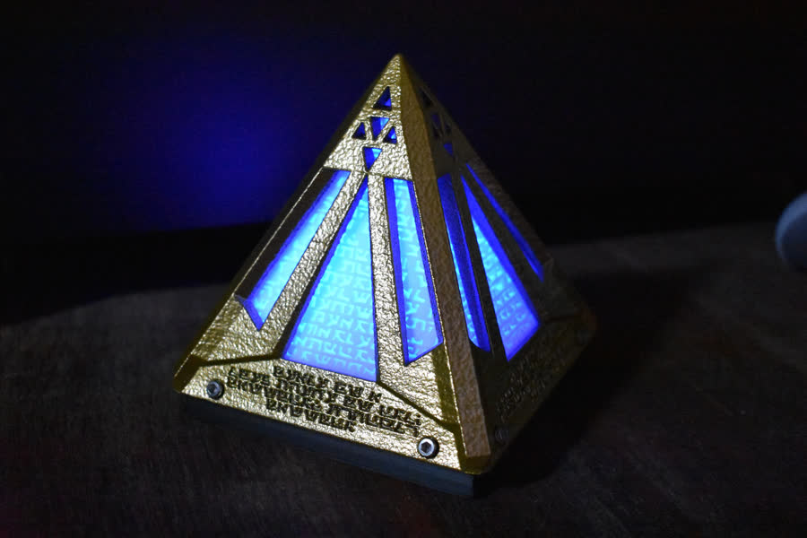

Dossiers
L’Ordre & ses gardiens
Les maîtres et padawans qui ont façonné l’histoire du Jedi.
Temple Jedi · Coruscant
Découvrez les connaissances et les secrets que le Conseil Jedi a conservés au fil des générations
Consulter les archivesDossiers
Les maîtres et padawans qui ont façonné l’histoire du Jedi.

Systèmes
De Coruscant aux sanctuaires oubliés des Régions Inconnues.

Artefacts
Holocrons, cristaux kyber et enseignements transmis depuis des milliers d'années.
Sélection de l’archiviste
L’holocron est une mémoire vivante. Découvrez les enseignements du Code Jedi et l’héritage de ceux qui ont choisi la lumière.
Ouvrir le dossier"Ne faites confiance qu’à la Force - Jedi Fallen Order"
Envie d’en savoir plus sur l’univers Star Wars ? La Wookieepedia en français regroupe de nombreuses fiches sur les personnages, les planètes et les événements de la saga.
Visiter la WookieepediaUne présentation des Archives du Conseil Jedi. Les sous-titres français sont activés par défaut
Vidéo générée avec l’outil d’intelligence artificielle Renderforest AI le 25 novembre 2026.